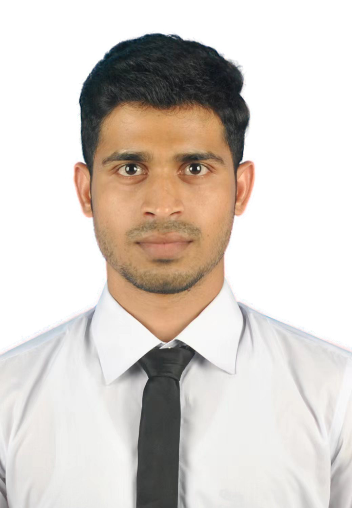

As a graduate with a Bachelor of Science in Computer Science and Technology,
I am driven by a passion for leveraging computer science to address real-world
challenges. My academic journey has cultivated a deep interest in Java/Python/C/C++ programming,
Artificial Intelligence, and software engineering. I am eager to delve deeper into these areas,
particularly focusing on how advanced technologies can be harnessed to innovate and solve complex problems.
I am enthusiastic about the prospect of pursuing a master's degree in China,
where I aim to further specialize in cutting-edge technology and research. This
opportunity will enable me to engage with diverse international perspectives,
collaborate with esteemed professors, and contribute to significant
advancements in the field. My goal is to immerse myself in a rigorous
academic environment that fosters innovation and research excellence,
ultimately enhancing my ability to make meaningful contributions to the
global tech community.